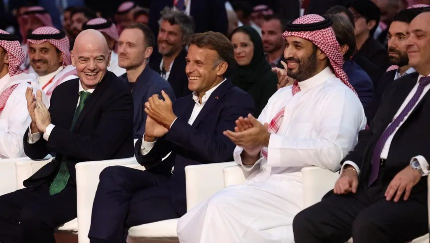
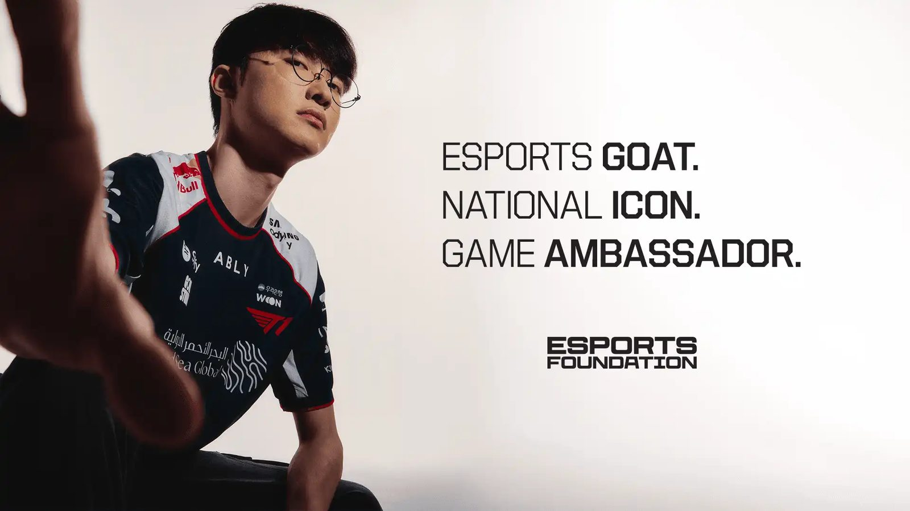
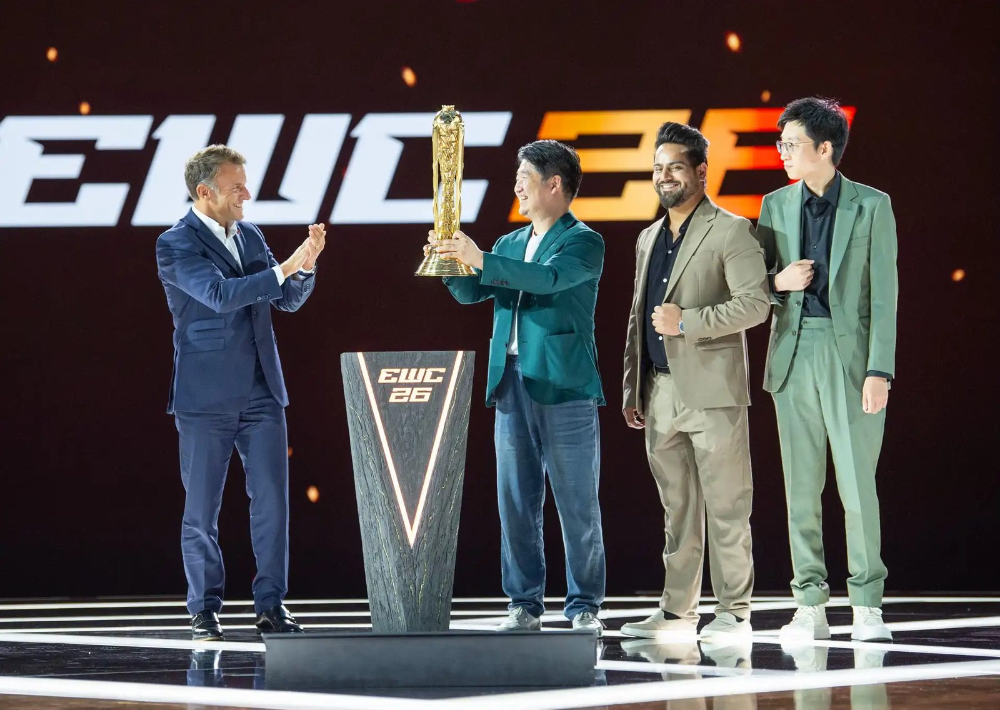
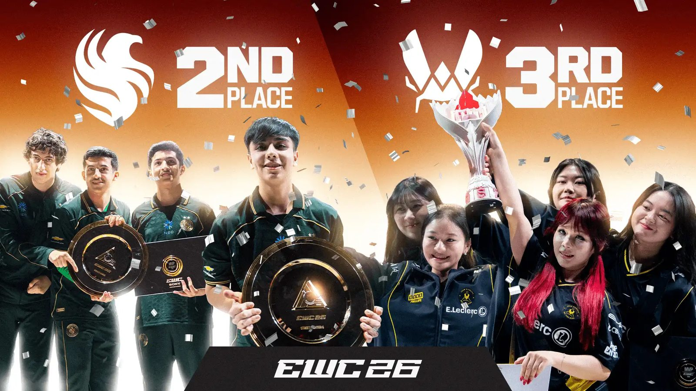

사우디아라비아가 최근 적극적으로 육성하고 있는 산업 가운데 하나가 게임과 e스포츠다. 그 중심에는 사우디가 2024년 출범시킨 국제 e스포츠 대회 ‘e스포츠 월드컵(Esports World Cup, EWC)’이 있다. 2024년과 2025년 리야드에서 열린 e스포츠 월드컵은 올해 처음으로 사우디를 벗어나 프랑스 파리에서 개최됐다.
이번 대회에서는 한국 선수들의 존재감도 두드러졌다. ‘페이커(Faker)’ 이상혁과 ‘쵸비(Chovy)’ 정지훈 같은 세계적인 스타부터 오버워치 종목의 한국 선수들까지 다양한 무대에서 활약했다. 특히 한국 선수들은 경기뿐 아니라 e스포츠 월드컵의 공식 홍보 콘텐츠에서도 중요한 역할을 맡았다.
사우디에서 시작해 파리로 간 e스포츠 월드컵
e스포츠 월드컵은 하나의 게임으로 승부를 가리는 대회가 아니라 여러 인기 게임을 한데 모은 종합 e스포츠 대회다. 올림픽에서 서로 다른 종목의 경기가 열리는 것처럼 e스포츠 월드컵에서도 리그 오브 레전드(League of Legends), 오버워치(Overwatch), 발로란트(VALORANT), 배틀그라운드(PUBG), 철권(Tekken), 체스 등의 대회가 진행된다. 2026년에는 24개 게임에서 총 25개 토너먼트가 열렸으며 2,000명 이상의 선수와 200개 이상의 클럽이 참가했다.
각 게임에서 별도의 우승자를 가리지만 성적은 소속 e스포츠 구단의 ‘클럽 챔피언십(Club Championship)’ 포인트에도 반영된다. 여러 종목의 포인트를 합산해 e스포츠 월드컵 전체에서 가장 뛰어난 성적을 거둔 구단을 선정하는 구조다.
2026 e스포츠 월드컵은 7월 6일부터 8월 23일까지 7주 동안 프랑스 파리(Paris)에서 열렸다. 당초 올해 대회 역시 리야드(Riyadh)에서 개최될 예정이었으나 중동 지역의 분쟁과 이동·안전 문제로 파리로 이전되면서 e스포츠 월드컵 출범 이후 첫 해외 개최가 됐다. 한편 국가대표팀이 경쟁하는 별도의 ‘e스포츠 네이션스컵(Esports Nations Cup, ENC)’은 당초 올해 11월 리야드에서 처음 열릴 예정이었으나, 최근 지역 정세를 이유로 2027년 11월로 연기됐다.
8월 23일 파리 그랑 팔레(Grand Palais)에서 열린 폐막식에는 무함마드 빈 살만(Mohammed bin Salman) 사우디 왕세자와 에마뉘엘 마크롱(Emmanuel Macron) 프랑스 대통령이 함께 참석했다. 마크롱 대통령은 종합 우승을 차지한 에이지닷에이엘(AG.AL, All Gamers Global)에 직접 트로피를 수여했다. 빈 살만 왕세자의 이번 파리 방문은 프랑스 공식 방문 일정의 시작으로, 폐막식 이후 양국은 별도 정상회담을 갖고 다양한 분야의 협력 방안을 논의했다. 게임과 e스포츠가 사우디의 산업 육성을 넘어 국제 협력의 접점으로 활용되고 있음을 보여주는 장면이었다.

e스포츠 월드컵 폐막식에 참석한 마크롱 프랑스 대통령, 무함마드 빈 살만 사우디 왕세자 — 출처: 엔트아라비(EntArabi) 웹사이트
e스포츠 월드컵의 얼굴이 된 페이커
한국 선수들의 존재감은 경기장 안팎에서 확인할 수 있었다. 지난 7월 e스포츠 월드컵을 운영하는 e스포츠 월드컵 재단(Esports World Cup Foundation, EWCF)은 한국의 리그 오브 레전드 선수 이상혁(Faker)을 e스포츠 월드컵과 e스포츠 네이션스컵의 ‘게임 앰배서더(Game Ambassador)’로 임명했다. 활동 기간은 2028년까지다. 이상혁은 축구 스타 크리스티아누 호날두(Cristiano Ronaldo), 체스의 마그누스 칼센(Magnus Carlsen) 등과 함께 e스포츠 월드컵 앰배서더 프로그램의 주요 인물이 됐다.

e스포츠 월드컵 게임 앰배서더에 임명된 한국선수 이상혁(Faker) — 출처: e스포츠 월드컵 웹사이트
e스포츠 월드컵은 이상혁과 젠지(Gen.G) 소속 정지훈(Chovy)의 라이벌 관계를 활용한 콘텐츠도 선보였다. 두 선수가 직접 사용하고 서명한 수제 체스판을 단 하나뿐인 공식 수집품으로 제작해 경매에 내놓은 것이다. 두 선수가 체스 종목에서 실제 선수로 대결한 것은 아니며, 두 한국 선수의 경쟁 구도를 체스라는 소재로 표현한 콘텐츠다. 한국 선수들의 스타성이 경기 결과를 넘어 e스포츠 월드컵의 글로벌 콘텐츠로 활용되고 있는 셈이다.
사우디 e스포츠와 이어지는 한국 선수들
| 종목 | 성적 | 구단(국가) | 주요 한국 선수 |
|---|---|---|---|
| 리그 오브 레전드 | 1위 | 디플러스 기아(한국) | 쇼메이커·루시드·스매시·캐리어·시우 |
| 리그 오브 레전드 | 2위 | 카민 코프(프랑스) | 칸나·강예후 |
| 리그 오브 레전드 | 3위 | 젠지(한국) | 쵸비 등 |
| 오버워치 | 1위 | 제타 디비전(일본) | 김동현·김진서·박민기·신세원·이선우 |
| 오버워치 | 3위 | 티원(한국) | 동학·프라우드·스큐드·제스트 |
| 발로란트 | 3위 | 농심 레드포스(한국) | 문우현·정환·구상민·김무빈·이혁규·박성현 |
| PUBG 모바일 | 2위 | 농심 레드포스(한국) | SOEZ·XZY·TIZ1·HYUNBIN |
| 철권 8 | 2위 | 키움 DRX(한국) | 윤선웅(LowHigh) |
※ 클럽 챔피언십 종합 순위에서는 한국 구단 티원(T1)이 10위를 기록했다. ※ 선수명은 대회 등록 활동명 또는 공식적으로 확인 가능한 이름을 기준으로 표기했다.
대회 전체에서 가장 높은 순간 시청자 수를 기록한 리그 오브 레전드에서는 한국 구단 디플러스 기아가 우승을 차지했으며, 젠지와 티원도 각각 3위와 4위에 올랐다. 준우승한 프랑스 구단 카민 코프에서도 한국 선수 김창동(Canna)과 강예후(kyeahoo)가 주전으로 활약했다.
한국 선수들의 경기력은 팀 기반 슈팅게임 ‘오버워치(Overwatch)’에서도 두드러졌다. 일본 구단 제타 디비전(ZETA DIVISION)은 결승에서 사우디 구단 트위스티드 마인즈(Twisted Minds)를 4대 2로 꺾고 우승했다. 일본 구단이지만 김동현(Proper), 김진서(Shu), 박민기(Viol2t), 신세원(BERNAR), 이선우(KNIFE) 등 한국 선수들이 로스터의 중심을 이뤘다. 한국 구단 티원(T1)도 중국 웨이보 게이밍(Weibo Gaming)을 3대 0으로 꺾고 3위를 차지했다. 특히 김동현은 2025년 사우디 구단 팀 팔콘스 소속으로 e스포츠 월드컵 오버워치 우승을 차지하고 대회 엠브이피(MVP)에도 선정됐다. 이후 일본 구단 제타 디비전으로 이적해 올해 다시 정상에 오르며 2년 연속 e스포츠 월드컵 오버워치 우승을 경험했다.
사우디 구단 팀 팔콘스의 오버워치 팀에는 한빈(Hanbin), 필더(Fielder), 프로퍼(Proper), 치요(ChiYo) 등 세계 정상급 한국 선수들이 활동해 왔다. 특히 2025년에는 한국 선수 중심의 전력으로 e스포츠 월드컵 오버워치 정상에 올랐다. 그러나 올해는 상황이 달랐다. 김동현이 없는 팀 팔콘스는 웨이보 게이밍과 티원에 연이어 패하며 오버워치에서 일찍 탈락했다.
그럼에도 팀 팔콘스는 여러 종목의 성적을 합산하는 e스포츠 월드컵 클럽 챔피언십(Club Championship)에서 종합 2위에 올랐다. 최종 순위에서는 중국 구단 에이지닷에이엘(AG.AL)이 5,300점으로 우승했고, 사우디 구단 팀 팔콘스가 4,600점으로 2위, 프랑스 구단 팀 바이탈리티(Team Vitality)가 3,300점으로 3위를 기록했다.
특히 팀 바이탈리티의 종합 성적에는 여성 선수들의 활약도 힘을 보탰다. 팀 바이탈리티의 여성팀은 모바일 레전드: 뱅뱅(Bang Bang) 여성 국제대회(MWI)에서 우승하며 클럽 챔피언십 포인트를 획득했다. 여성 선수들이 e스포츠 월드컵 무대에서 구단의 종합 성적에 직접 기여했다는 점에서도 눈길을 끈다.

대회 종합 1위 중국 구단 에이지닷에이엘(AG.AL) — 출처: e스포츠 월드컵 웹사이트

대회 종합 2위 사우디 구단 팀 팔콘스, 3위 프랑스 구단 팀 바이탈리티 — 출처: e스포츠 월드컵 웹사이트
한국 선수들의 존재감은 이처럼 여러 층위에서 나타난다. 페이커처럼 e스포츠 월드컵을 세계에 알리는 스타가 있는가 하면, 한국 선수들이 해외 또는 사우디 구단의 핵심 전력으로 우승을 이끌기도 한다. 사우디가 e스포츠를 글로벌 산업과 문화 콘텐츠로 확장하는 과정에서 한국 선수들은 ‘선수’, ‘구단의 전력’, ‘글로벌 홍보 자산’이라는 서로 다른 방식으로 그 접점을 넓혀가고 있다.
사진출처 및 참고자료
— e스포츠 월드컵(Esports World Cup) 웹사이트, esportsworldcup.com
— e스포츠 월드컵(Esports World Cup) 웹사이트, esportsworldcup.com
— e스포츠 월드컵(Esports World Cup) 웹사이트, esportsworldcup.com
— e스포츠 네이션스 컵(Esports Nations Cup) 웹사이트, esportsnationscup.com
— 《사우디 프레스 에이전시(Saudi Press Agency)》 (2026. 08. 23), “HRH the Crown Prince Attends the Esports World Cup 2026 Closing Ceremony in Paris,” spa.gov.sa
— 《엔트아라비(EntArabi)》 (2026. 08. 24), “Macron Crowns All Gamers Global Esports World Cup 2026 Champion in Paris,” entarabi.com